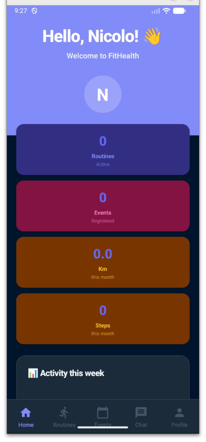
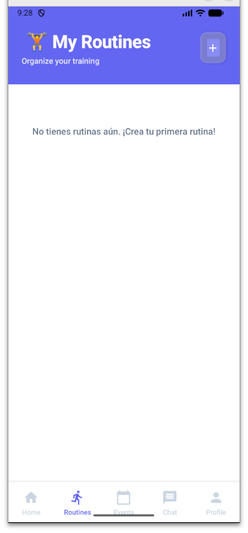
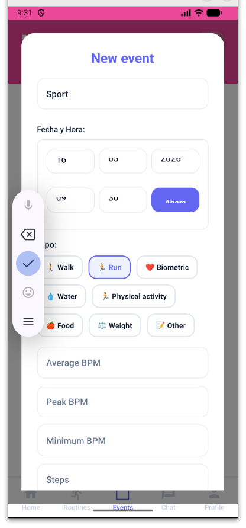
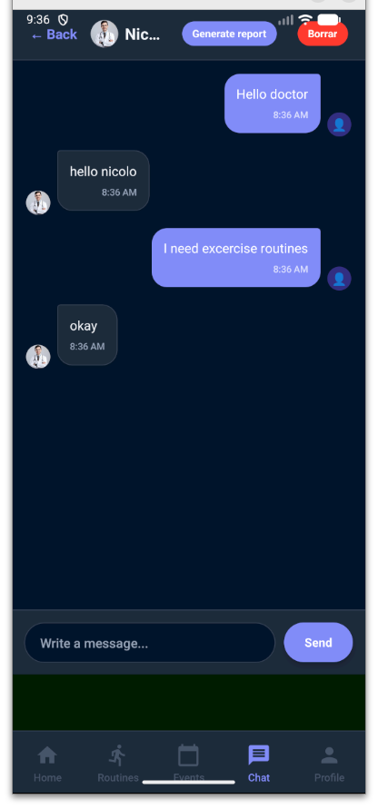
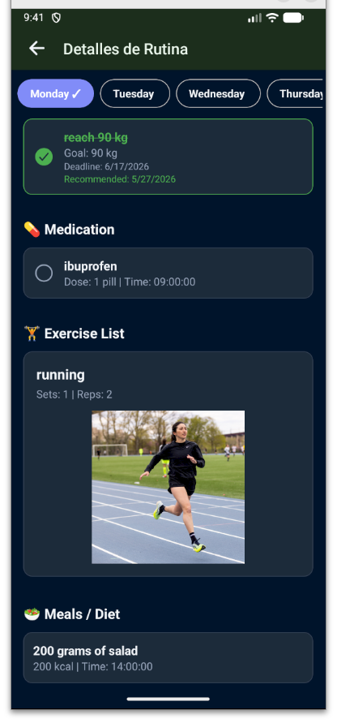

A unified mobile platform that lets doctors and patients share routines, vitals and clinical context — continuously, not just at the next appointment.
Fitness apps and clinical records live in separate worlds. A doctor sees a patient for a few minutes, twice a year — armed only with what the patient remembers to tell them. Continuous data exists, but never reaches the people who treat it.
A walkthrough of the app on web — from the home dashboard to a real patient–doctor conversation.




The home screen aggregates the week's activity and per-routine progress reports. The doctor sees the same view from the patient's clinical record.

Routines aren't just workouts. They combine measurable goals, prescriptions and daily habits — the unit of treatment that doctors actually want to assign.
Events are the day-to-day log: steps, distance, heart rate, glucose, blood pressure, water, food. Each event can be attached to a routine — building a clean dataset over time.
Patients and doctors talk directly inside the app — and can generate a progress report from the conversation with one tap.
General practitioners managing patients with chronic conditions — diabetes, hypertension, obesity. Continuous data turns 7-minute consultations into informed decisions.
The same routine model fits non-clinical professionals: assign plans, follow up, iterate.
Users with a chronic condition or a personal goal can use FitHealth alone — and invite their doctor later.
Indicative estimates compiled from public industry reports — Statista, IQVIA, Eurostat — for academic context.
The European population pyramid is tilting toward older age groups — and chronic conditions concentrate in exactly those cohorts. The clinical follow-up bottleneck only gets tighter from here.
Indicative shape from Eurostat population projections (EUROPOP2023). Bars are illustrative — solid = 2024, dashed outline = 2050.
A multidisciplinary team across mobile, backend, design and infrastructure.
FitHealth — a continuous health record for patients and doctors, built as a single mobile and web platform.